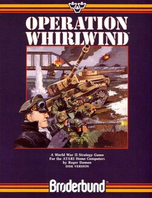

Operation Whirlwind
Operation Whirlwind is a turn-based battalion-level strategy game created by Roger Damon and published by Brøderbund in 1983 for the Commodore 64 and Atari 8-bit computers. Ariolasoft distributed the title in Europe. Set in northern France during the Second World War, the game places tanks, guns and infantry platoons under the player's command. Enemy positions remain hidden until they reveal themselves by firing, while bombardment can weaken units or halt an advance. An assault phase handles close combat, and engineers can rebuild bridges needed to continue the operation. Its relatively approachable design offered a tactical computer wargame without the enormous time and record-keeping demands associated with many of its contemporaries.